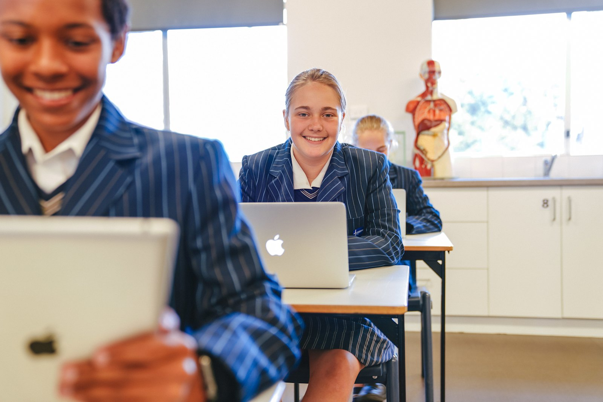
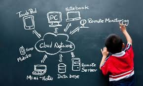

Tech Integration in Blended Learning
B
lended learning combines online and in-person instruction to maximize student learning. Technology allows flexible schedules while maintaining teacher interaction.
Learning management systems track progress, provide lectures online, and allow digital submissions.
Interactive quizzes, discussion boards, and video lectures enhance engagement.
Challenges include unequal access to technology and the need for teacher training.
Read more on Edutopia – How Technology is Changing Classrooms.
Using Technology to Support Student Engagement

S
tudent engagement improves when technology is used effectively. Gamified apps and virtual classrooms motivate learners and clarify complex concepts.
Teachers can monitor understanding in real time and give instant feedback.
Collaboration tools allow students to work in teams remotely, enhancing project-based learning.
Overuse can cause distraction, so purposeful integration is key.
Read more on Edutopia – Technology Integration Resources.
Designing Lessons With Digital Tech
E
ducators are redesigning lessons using digital tools like quizzes, virtual labs, and collaborative documents to support interactive learning.
Purposeful integration ensures tools enhance learning rather than distract students.
Adaptive learning apps and online resources allow individualized progress.
Teacher training is essential for effective digital lesson planning.
Read more on Edutopia – Designing Lessons With Digital Tech.
Cyber Safety in the Digital Classroom
W
ith technology use increasing, cyber safety is critical. Students must learn digital citizenship, privacy, and safe online behavior.
Programs teach students to identify misinformation, protect personal information, and avoid cyberbullying.
Collaboration between parents and educators is essential for digital safety.
Safe online environments teach responsibility and awareness in digital spaces.
Read more on StopBullying.gov – Cyber Safety Guidelines.
Digital Collaboration Tools for Students
C
ollaboration is transformed with tools like Google Workspace, Padlet, and Zoom, enabling students to work together online.
These platforms allow shared editing, video calls, and real-time communication for projects.
Students gain essential teamwork and online communication skills.
Guidelines ensure collaboration remains productive, secure, and respectful.
Read more on Common Sense Education – Essential Tools for Students.
Future of Education Technology

T
he future of education includes AI, AR/VR, and personalized learning, shaping immersive learning experiences.
AI tools provide tailored learning experiences adapting to student progress.
Virtual and augmented reality bring abstract subjects to life, from labs to historical simulations.
Equitable access and proper teacher training are necessary to implement these tools effectively.
Read more on World Economic Forum – Future of Education Technology.